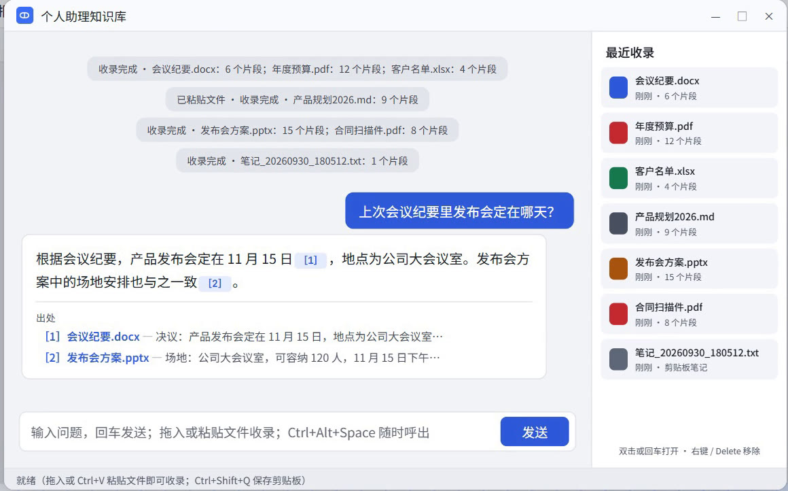

v{{VERSION}} · Windows 10 / 11
把散落的文档，
把散落的文档，
变成随问随答的知识库
拖进来就收录，用一句话提问。答案标明出自哪份文件、哪一段，点一下就能打开原文。
- 拖入文档
- 直接提问
- 点出处看原文

核心功能
会议纪要、合同、报表、讲义、截图，放进来之后问一句就能找到。
拖进来就收录
文件、文件夹、剪贴板、网页链接都能收，后台入库不卡顿。
自然语言提问
不用记文件名，像问同事一样提问，可限定“只看《某文档》”。
答案都有出处
列出引用的文档和片段，点击即打开原文件核对。
常见格式全支持
PDF、Word、Excel、PPT、Markdown、TXT，图片自动 OCR。
资料留在本机
解析和检索都在本地，只把相关片段发给你选的模型。
随叫随到
常驻托盘，任意程序里按 Ctrl+Alt+Space 呼出。
六种收录方式
- 拖放拖入文件或整个文件夹
- 剪贴板复制文字后按 Ctrl+Shift+Q
- 资源管理器选中文件后按 Ctrl+Shift+A
- 右键菜单文件上右键“添加到知识库助理”
- 监控文件夹下载目录等新文件自动收录
- 网页链接粘贴网址发送，抓取正文入库
一分钟演示
免费下载，双击安装
不配置 API Key 也能检索原文；配置后由 AI 整理回答，支持以下模型及任何 OpenAI 兼容接口：
KimiDeepSeek通义千问
智谱 GLM硅基流动OpenAI
OpenRouterClaude
不想安装？下载便携版 zip（{{PORTABLE_SIZE_MB}} MB）：解压后双击 pda.exe，数据存在解压目录里，需手动下载新版替换
Windows 10 / 11 64 位 · 备用下载：GitHub · SHA-256：{{SHA256}}
常见问题
v{{VERSION}} 更新了什么？
{{NOTES}}
需要付费吗？
软件免费。AI 回答使用你自己的大模型 API Key，费用由服务商按用量收取。
我的文档会被上传吗？
不会整份上传。提问时只发送检索到的相关片段；入库时发送开头约 1500 字生成标签，可在配置中关闭。
如何升级？
程序启动时及每 6 小时检查新版本，侧栏底部出现“新版本”入口，点击即可自动升级。
提示“Windows 已保护你的电脑”？
安装包暂未做代码签名。点“更多信息”→“仍要运行”即可，可用上方 SHA-256 校验文件。